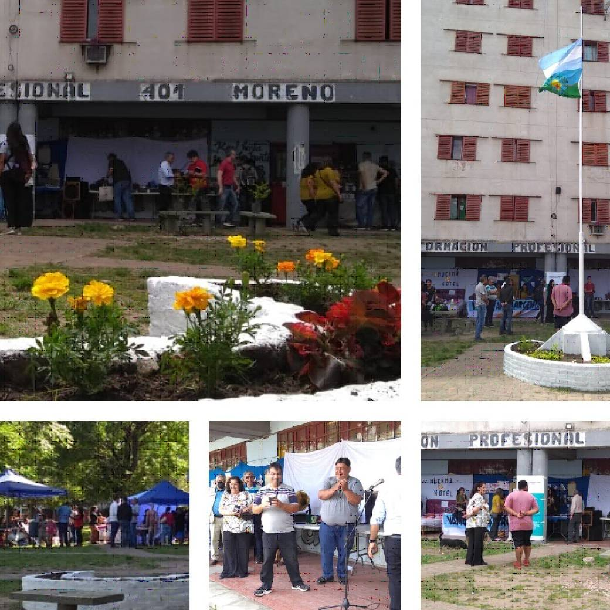

Tecnología, Innovación y Competencias Ocupacionales en la Sociedad del Conocimiento
Ana Catalano. Clase 3.
 audio
audio  original
original  resumen
resumen  IFTF
IFTF  actividad
actividad
Actividad
Identificación y descripción de la propuesta pedagógica.
Institución: C.F.P. Nº 401 de Moreno, Av del Libertador 4603, Trujui, Moreno.
La institución elegida para el presente trabajo cuenta con una sede central pequeña y 13 subsedes distribuidas en distintas localidades y barrios alejados del centro del partido de Moreno. Aunque en Moreno hay otros centros de Formación Profesional y Laboral, el CFP 401 es el que tiene la mayor oferta educativa del distrito, con 125 trayectos formativos y 1671 alumnos, que en muchos casos suelen realizar más de un trayecto en la institución.
Los trayectos formativos que se dictan en el Centro pertenecen a diversas familias profesionales, por lo que la oferta educativa es muy amplia, incluyendo áreas como informática, construcción, mecánica, estética, gestión comunitaria, diseño textil, jardinería, electrónica, cocina y panadería, entre otras. Esto permite responder a las demandas de la comunidad y del sector productivo local. Debido a que la sede central tiene sólo 5 aulas y 2 de ellas son pequeñas hay varios entornos formativos que se encuentran descentralizados, como los de cocina y panadería, electricidad, huerta, mecánica y construcción, que se encuentran distribuidos en el territorio. Esto si bien es un desafío para la gestión institucional, también permite una articulación más efectiva con las realidades y demandas específicas de la comunidad.
La oferta educativa del CFP 401 es abarcativa, diversificada y situada en el territorio al estar distribuida en los barrios del distrito de Moreno, lo que configura un diseño institucional muy particular. La diversidad de las realidades de las distintas comunidades según su ubicación geográfica, su infraestructura, conectividad, comunicación y accesibilidad a servicios se puede vincular con lo que Pablo Granovsky expresa en Trabajo y Saber: Las Políticas de Empleo y Formación Profesional (2020) cuando analiza “La gestión de los dispositivos de formación”, mencionando el valor del “Diálogo Social”, como herramienta para consensuar la oferta educativa con las demandas de la comunidad en el territorio y así adecuar el proyecto pedagógico de manera situada. Aunque se entiende que el concepto de “Diálogo Social” puede hacer referencia a regiones más extensas, se puede ver una analogía directa cuando observamos distintas realidades y distintas demandas en las subsedes del Centro.
Por otro lado, tanto esta oferta educativa variada, como el regreso frecuente que se observa en ex alumnos del Centro que se acercan a transitar nuevos trayectos formativos, puede relacionarse con lo que expone Ana Catalano en su obra Tecnología, Innovación y Competencias Ocupacionales en la Sociedad del Conocimiento (2018), cuando nos dice que en la sociedad del conocimiento, la producción de saberes se da en una espiral de aprendizajes, y donde la eficiencia se basa cada vez menos en la intensidad del trabajo físico, y cada vez más en la intensidad del conocimiento aplicado. Cuando analiza el futuro del trabajo y la evaluación de las cualificaciones señala que para nuestro país es una buena estrategia promover la calidad de la fuerza laboral, favorecer los procesos de diversificación productiva y promover las habilidades abiertas y permanentes de aprendizaje, dado que se desconocen muchas de las competencias específicas que se demandarán en el futuro y es central adquirir la capacidad de aprender y transferir conocimientos de un campo a otro de aplicación. En este sentido, los estudiantes de este Centro pueden ampliar sus horizontes de saberes cuando diversifican sus conocimientos en distintos trayectos, conformando una visión más profunda de su realidad, adquiriendo más herramientas y accediendo a mayores oportunidades de desarrollo personal.
Aprovechar la territorialidad para desarrollar un proyecto pedagógico situado es una de las estrategias del CFP 401 de Moreno. Pero además de esto, siguiendo el concepto de diálogo social que menciona Pablo Granovsky y que también destaca la OIT, es fundamental incluir al sector productivo y al mundo del trabajo en una escucha activa para lograr una propuesta pedagógica pertinente. En esta línea, otra de las estrategias del centro es utilizar los insumos emitidos por la mesa del Consejo Provincial de Educación y Trabajo (COPRET), que realiza encuentros cada año en Moreno. Esta mesa es un espacio de participación que procura lograr acuerdos estratégicos entre actores públicos y privados, articulando la Educación con el sector productivo y el mundo del trabajo. Uno de los resultados que arroja esta mesa son indicadores sobre la demanda de puestos de trabajo y la demanda de servicios de trabajadores autónomos en determinadas áreas o rubros. La mesa del COPRET puede orientar claramente hacia dónde avanza el sector productivo local, cuáles son las actividades que más crecieron, dónde se presentan mayores demandas de empleo, y otras variables que señalan hacia dónde es pertinente dirigir la oferta educativa para acompañar la demanda del sector productivo. De este modo, una participación activa en la mesa del COPRET y una escucha atenta a sus resultados, es la estrategia principal del CFP 401 para ajustar cada año su propuesta educativa. Así, las recomendaciones del COPRET, son valoradas con detenimiento, analizando en cada caso la viabilidad de implementación inmediata considerando los espacios formativos del Centro y la calificación profesional requerida.
La demanda puntual de la comunidad también es una valiosa fuente de insumos, y se conoce a través de solicitudes directas y espontáneas de interesados que se acercan a realizar pedidos o consultas sobre trayectos formativos determinados. El proyecto institucional del Centro tiene como lineamientos la escucha activa a la comunidad, por lo que siempre se valoran estos pedidos, y en aquellos casos en que los cursos que el aspirante solicita no existiesen, se toma nota de las solicitudes y se agrupan por familias profesionales, para evaluar el grado de la demanda considerar la posibilidad de su eventual incorporación.
A partir de todas estas fuentes mencionadas, y considerando la oferta educativa del año en curso, se elabora en forma institucional la propuesta de oferta educativa para el siguiente ciclo lectivo, que se justifica apropiadamente y se somete a aprobación por las autoridades.
En el Centro también se destacan contenidos de alto valor formativo en relación con lo que podríamos llamar “capacidades blandas”. Cuando Pablo Granovsky analiza la formación profesional (FP) versus la educación tradicional, plantea que la FP no debe limitarse a una lógica puramente adaptativa al mercado, sino que se deben tener en cuenta los intereses propios de los estudiantes, para empoderarlos con una formación integral y más amplia, para que puedan desarrollar autonomía. En este sentido, el CFP 401 incluye trayectos interesantes como "Gestión Comunitaria", “Operador Sociocomunitario” y “Emprendimientos Productivos”, que no solo responden a necesidades del mercado sino que promueven el desarrollo del trabajo asociativo, el emprendimiento y el cooperativismo. De la misma manera, Ana Catalano al caracterizar el cambio de paradigma de los modelos productivos y cualificaciones, nos dice que al abandonar el taylorismo, el fordismo y el toyotismo, los nuevos modelos productivos requieren además de la polifuncionalidad, habilidades sociales de comunicación y de cooperación para el trabajo en equipo, donde cobran relevancia las capacidades vinculadas a las relaciones interpersonales. Podemos decir que el Centro incorpora en su propuesta educativa trayectos interesantes que acercan al estudiante conocimientos valiosos para organizarse en cooperativas comunitarias, asociarse, formar equipos y desarrollar iniciativas de emprendimientos productivos, lo que fortalece sus capacidades de autonomía y contribuye a reforzar los vínculos del trabajador con el entramado social.
Obstáculos
Uno de los principales obstáculos que enfrenta la institución es la limitación de los espacios físicos y la precariedad de la infraestructura disponible, lo que incide en forma negativa en la posibilidad de ampliar la oferta educativa y garantizar condiciones adecuadas y dignas de enseñanza y aprendizaje. La descentralización territorial, si bien es aprovechada en forma estratégica, dificulta que se puedan implementar los lineamientos institucionales en forma homogénea, debido a la diversidad de contextos barriales. El trabajo descentralizado en este Centro configura una vida institucional fragmentada, donde hay instructores y alumnos que realizan sus trayectos en forma aislada, y donde la lejanía con otras sedes desdibujan la identidad institucional, lo que representa desafíos a superar, que se intentan sobrellevar reforzando los canales de comunicación y generando espacios de encuentro. Estas realidades son contempladas por Granovsky cuando analiza las políticas públicas y la práctica de gestión, mencionando las condiciones estructurales que están presentes en los contextos de las instituciones en el territorio, donde la acción pública con inversión y el trabajo de instituciones en red, juegan un papel muy importante de apoyo para sostener la formación profesional.
Oportunidades.
Esta amplia distribución territorial del CFP 401, sin embargo, también puede representar una oportunidad para desarrollar una propuesta pedagógica situada, con un fuerte vínculo con la comunidad. La descentralización de las propuestas formativas acerca la escuela al estudiante, y permite una mejor lectura del contexto y una mayor pertinencia de las propuestas educativas. Esta cercanía con los territorios también posibilita una práctica formativa más inclusiva, donde la formación no es solo técnica, sino también social y cultural, lo que impulsa el desarrollo de las comunidades y está en sintonía con el pensamiento de Ana Catalano sobre el rol de los CFP como instituciones clave para la formación continua a lo largo de toda la vida.
Conclusión.
La experiencia del CFP Nº 401 de Moreno puede ser vista como un ejemplo de cómo la formación profesional, cuando se articula con políticas públicas y con el territorio, construye puentes entre el saber y el trabajo, tal como lo mencionan tanto Granovsky como Catalano. La propuesta pedagógica de este Centro, amplia y diversa, articulada con el Estado y el sector productivo, y con una escucha atenta y permanente de la comunidad, refuerza el sentido de una institución que trabaja integrada con su contexto, que desarrolla un proyecto educativo situado, pertinente y vinculado con las necesidades de la comunidad, y que contribuye de forma valiosa con el desarrollo social y productivo local.
